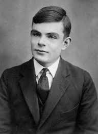

Tribute to Alan Turing

Alan Turing at the age of 16.
Alan Turing was a pioneering mathematician, computer scientist, logician, and cryptanalyst. He is widely considered the father of theoretical computer science and artificial intelligence. During World War II, Turing played a crucial role in breaking the German Enigma code, which significantly contributed to the Allied victory. Despite his immense contributions, Turing faced persecution due to his homosexuality, which was then criminalized in the UK. He tragically died in 1954. Today, Turing is celebrated for his groundbreaking work and his enduring impact on modern technology.